#9 Kevin Viveros
Posição: Atacante
Nacionalidade: Colômbia
2025: 10 gols • 1 assistência • Craque da rodada (x2)
.svg) Club Athletico Paranaense
Club Athletico Paranaense
Um portal com informações do Club Athletico Paranaense — história, elenco, torcida, curiosidades e títulos. Saiba tudo sobre o maior do estado do Paraná aqui. Nós somos o Furacão!
Athletico
Brasileirão Série B — 16/11/2025
Ver como foi o jogoAthletico x América-MG
23/11/2025 — 16h30
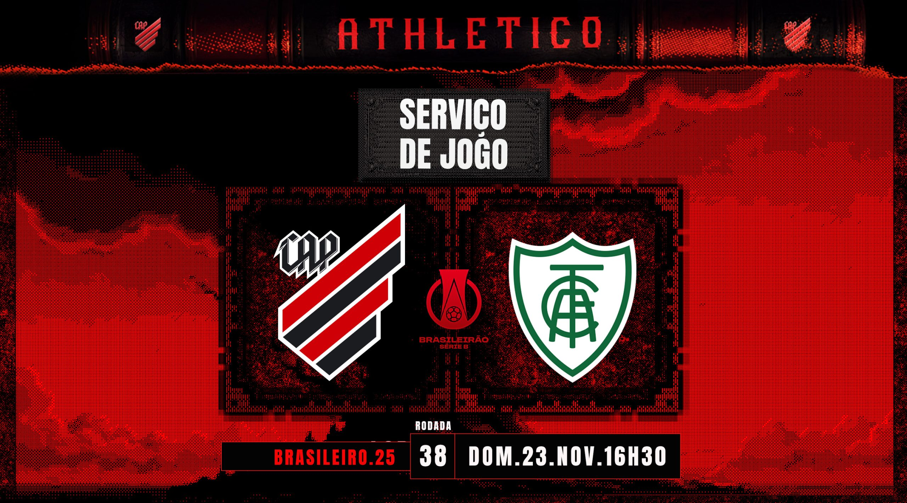O último jogo da temporada será em casa, na Arena da Baixada.
 Veja o serviço de jogo!
Veja o serviço de jogo!
Posição: Atacante
Nacionalidade: Colômbia
2025: 10 gols • 1 assistência • Craque da rodada (x2)
 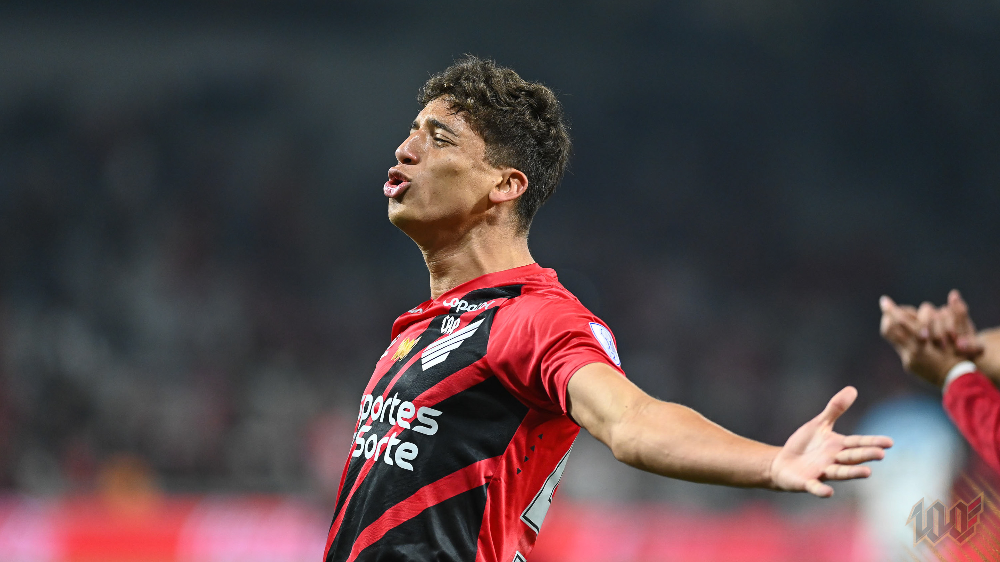
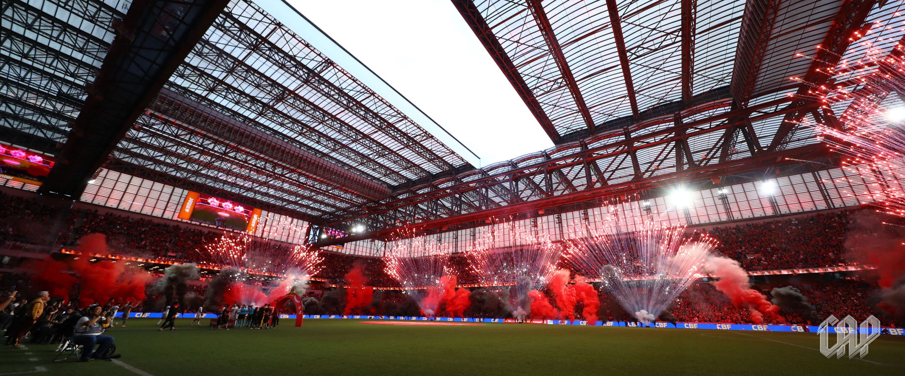
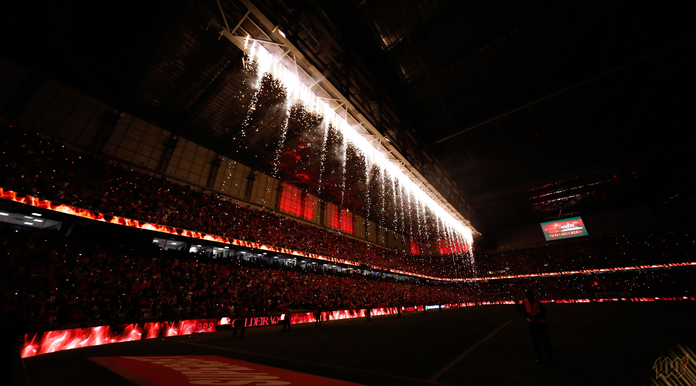
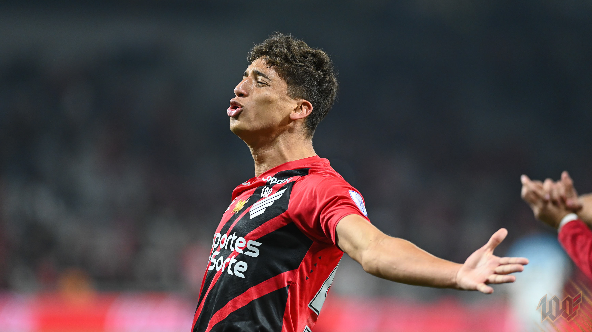
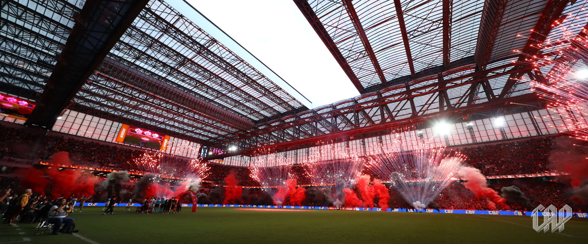
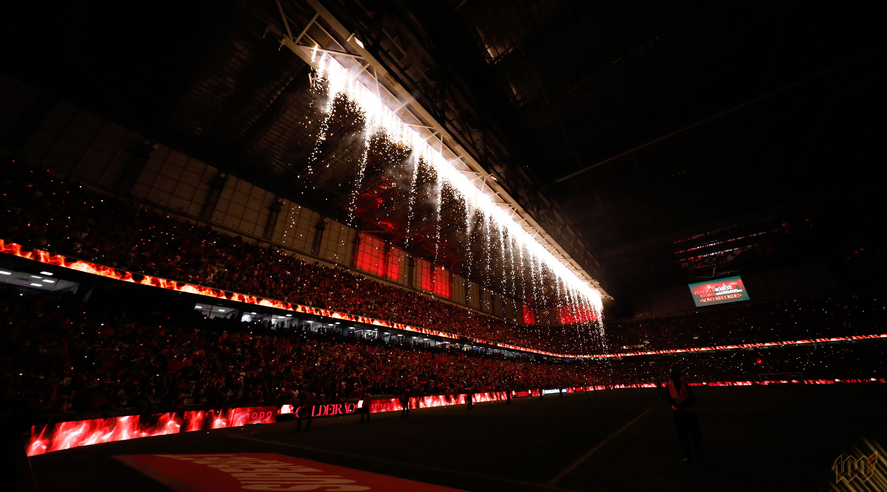
Use os botões para navegar ou aguarde a rotação automática.

 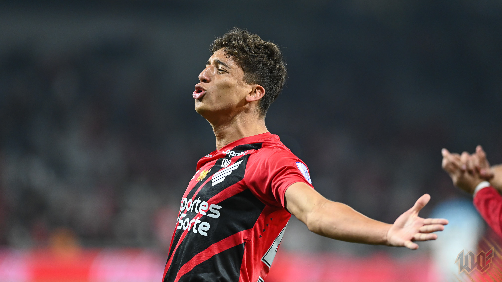
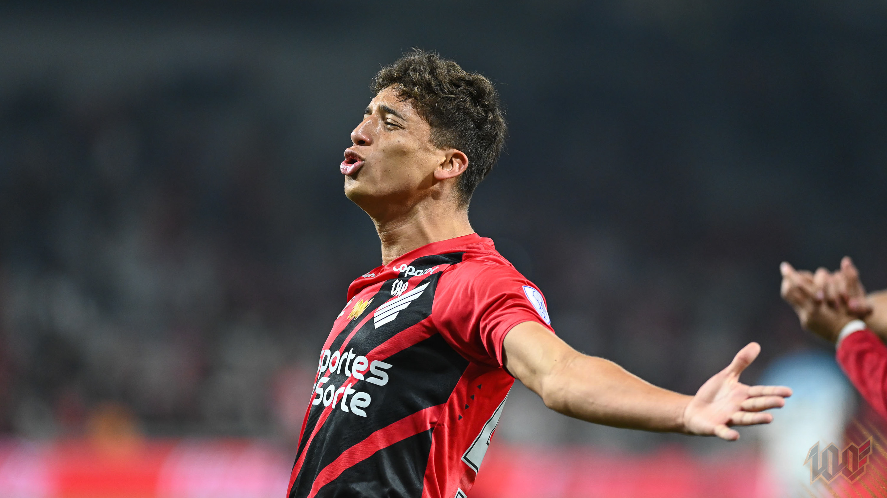
 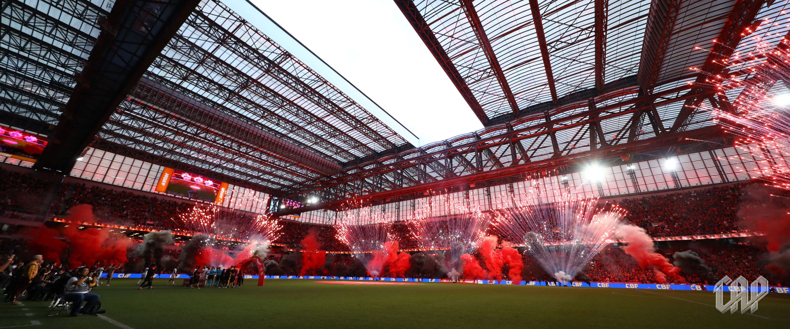
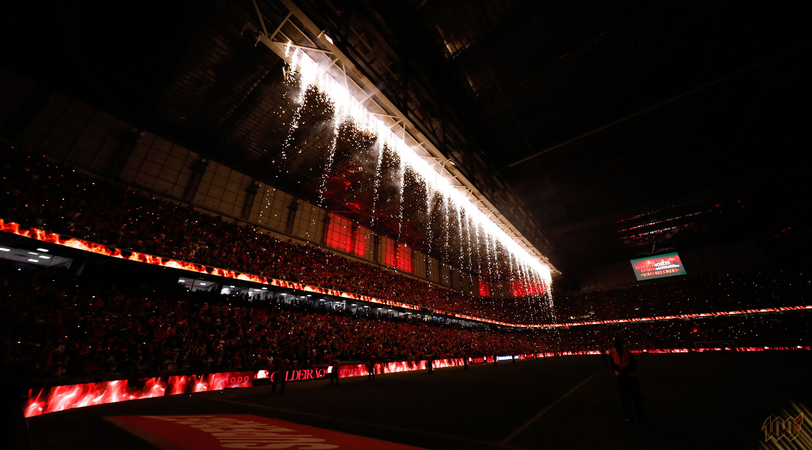
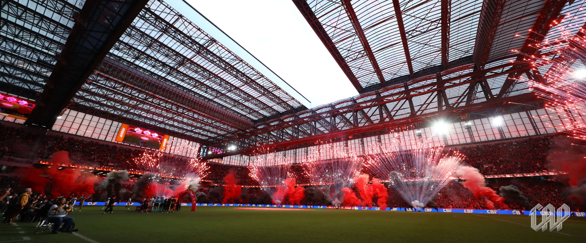
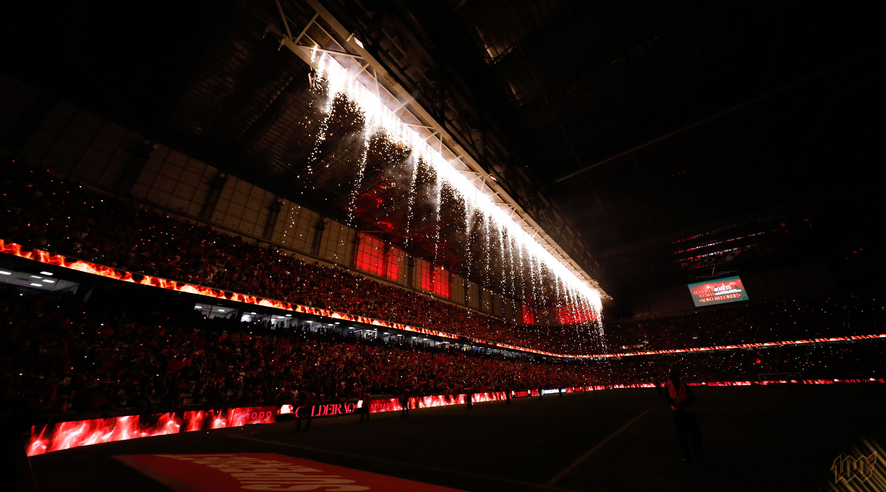